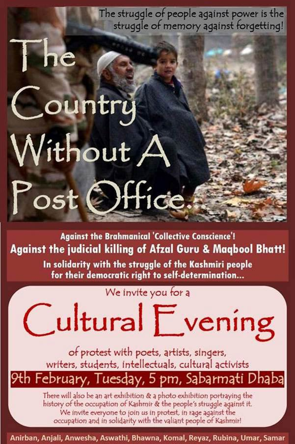

09 FEB 2016
The Incident and Arrest
A country without a post office
On a chilly night in Jawaharlal Nehru University, a protest was taking place against what the protesters called the judicial killing of Afzal Guru and Maqbool Bhatt. Poetry, music and art were to be the order of the day.

But the Akhil Bharatiya Vidyarthi Parishad (APVP), the student wing of the Bharatiya Janata Party (BJP), alleged that ‘anti-India’ slogans were raised at the event.
Watch the full interview here
Saurabh Sharma, then Joint Secretary of the JNUSU and a member of the ABVP, holds a press conference. (Photo: IANS)
They demanded the expulsion of the event’s organisers, and a sedition case was filed. Four days later, the JNU Students’ Union (JNUSU) president Kanhaiya Kumar was arrested.
Five others were named in the case – Umar Khalid, Anirban Bhattacharya, Rama Naga, Ashutosh Kumar, and Anant Prakash Narayanan. They went into hiding.